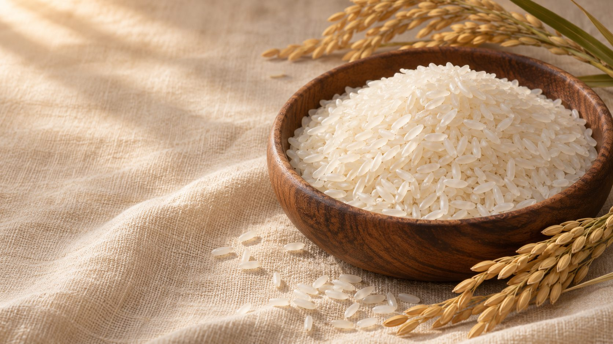
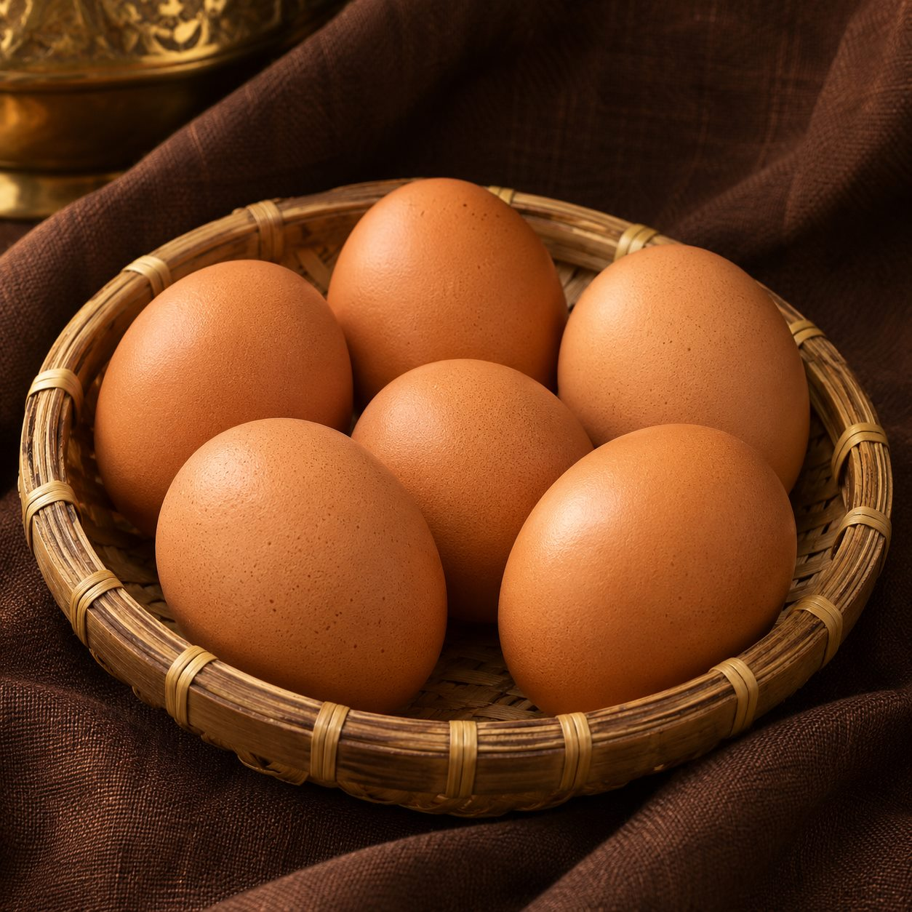
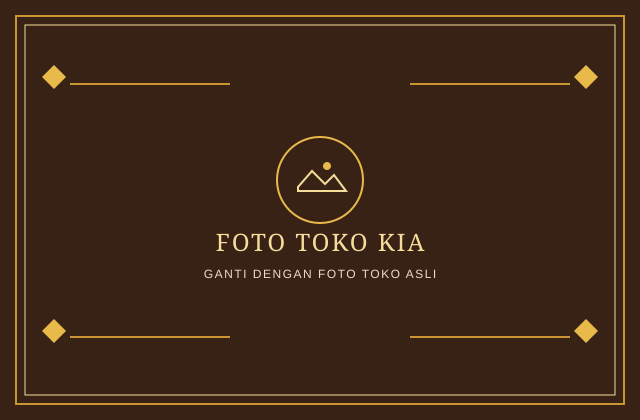
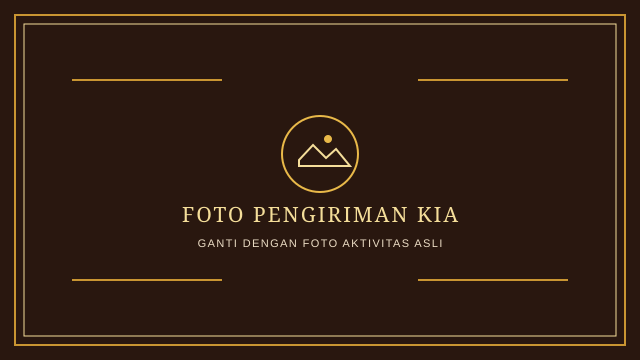

Beras pilihanRagam jenis untuk kebutuhan Anda
BERAS & SEMBAKO PILIHAN
Bekal terbaik,
untuk setiap meja.
Dari beras pilihan hingga kebutuhan dapur harian. Toko Beras KIA siap melayani keluarga dan usaha Anda, dengan pilihan lengkap dan layanan yang terasa dekat.
Melayani eceran & grosir
Pengiriman tersedia
Pengiriman tersedia

KEBAIKAN DARI SAWAHUntuk kebutuhan setiap hari


BERAS • TELUR • SEMBAKO— MELAYANI KELUARGA & USAHA
Harga bersahabatNilai baik untuk belanja harian
Siap grosirMelayani rumah tangga & usaha
Antar pesananTanyakan jangkauan pengiriman
DARI DAPUR KIA
Belanja baik,
dimulai dari sini.
Kebutuhan pokok yang akrab di dapur, tersedia dalam pilihan untuk belanja harian maupun usaha.

Sembako
lengkap.
Perlu kebutuhan lain? Kami siap membantu mencarikan pilihan.
Tanya ketersediaan ↗Harga dan stok dapat ditanyakan langsung kepada tim KIA.

DEKAT • LENGKAP • BERSAHABATCERITA KIA
Lebih dekat dengan
kebutuhan harian.
Toko Beras KIA hadir untuk membantu keluarga dan pelaku usaha memenuhi kebutuhan pokok dengan lebih mudah. Pilih beras favorit, lengkapi kebutuhan dapur, lalu hubungi kami untuk informasi stok dan pesanan.
Kami melayani pembelian langsung, pesanan grosir, dan pengiriman sesuai area layanan.
Kenali layanan kami →LAYANAN KIA
Belanja lebih
mudah, setiap hari.
Untuk belanja rumah, warung makan, restoran, maupun toko sembako.
Belanja langsung
Datang dan pilih kebutuhan Anda di toko.
Pesan lebih dulu
Hubungi kami untuk bertanya stok dan menyiapkan pesanan.
Diantar ke tujuan
Tanyakan ketersediaan pengiriman ke lokasi Anda.
Belanja grosir
Kebutuhan usaha dan pembelian dalam jumlah besar.

PESANAN SAMPAI KE ANDABelanja banyak?
Belanja banyak?
Tanyakan layanan antar.
Untuk pesanan rumah tangga maupun kebutuhan usaha, hubungi KIA untuk informasi pengiriman.
LANGKAH SEDERHANA
Empat langkah
menuju dapur.
Belanja kebutuhan pokok Anda dengan alur yang mudah.
- 01Pilih produkTentukan beras atau kebutuhan yang dicari.
- 02Hubungi WhatsAppSampaikan produk dan jumlah yang dibutuhkan.
- 03Konfirmasi pesananTanyakan stok, harga, dan detail pesanan.
- 04Diantar atau diambilPilih pengiriman jika tersedia atau ambil di toko.
KONTAK DAN LOKASI
Hubungi
Toko Beras KIA.
Silakan hubungi kami untuk informasi produk, stok, dan pemesanan.
WHATSAPP UTAMAMemuat nomor...
WHATSAPP ALTERNATIFMemuat nomor...
EMAILMemuat email...
TOKO UTAMA
Memuat nama toko...
Memuat alamat toko...LOKASI PENGGILINGAN
Memuat nama lokasi...
Memuat alamat penggilingan...Memuat keterangan lokasi...